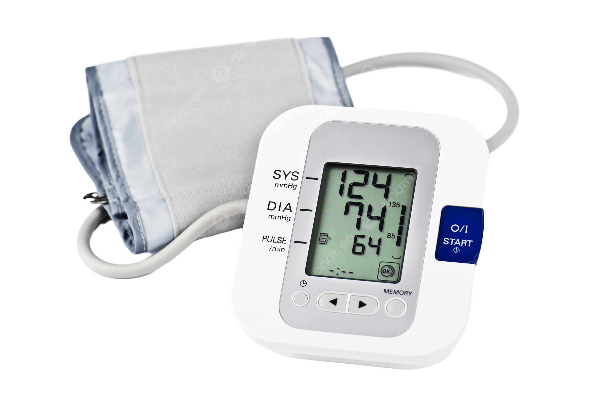

Tip del día
💧 Recuerda hidratarte cada 2 horas para mantener tu cuerpo en óptimas condiciones.
Videos de YouTube en lista
Cómo medir la presión arterial
Guía paso a paso para hacerlo en casa.
Cuidados básicos para heridas
Aprende a limpiar y proteger.
Primeros auxilios esenciales
Qué hacer en una emergencia.
Motivo de la página
En esta página de valoración de enfermería, te explicamos qué es la presión arterial, IMC, materiales o instrumentos que se ocupan para una valoración.
Últimos artículos

Cómo medir la presión arterial correctamente en 5 pasos
Aprende a tomar tu presión arterial de manera precisa y sencilla.
Leer másCuidados básicos para heridas: Evita infecciones
Consejos prácticos para limpiar y proteger heridas correctamente.
Leer más
Signos vitales: Qué son y cómo interpretarlos
Entiende la importancia de los signos vitales y cómo monitorearlos.
Leer másNoticias sobre enfermería
Nuevas tecnologías en enfermería
Dispositivos que están revolucionando el cuidado de pacientes.
Leer másRed social de enfermería
Síguenos en nuestras redes para más consejos y actualizaciones: